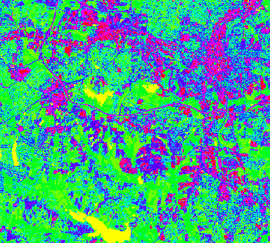
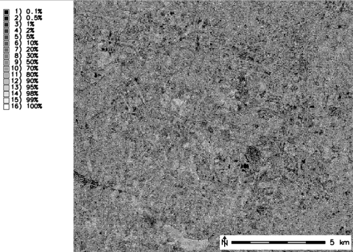
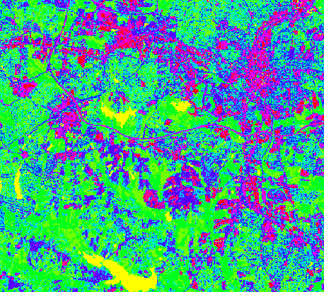
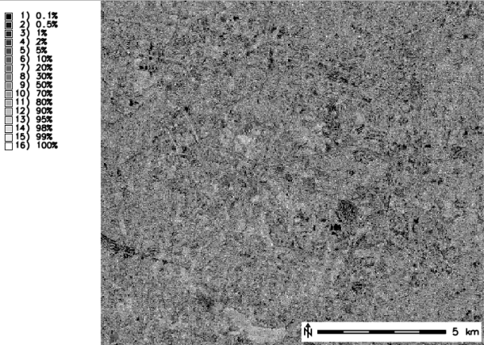

RGB composite of input data

Output raster map with pixels classified (10 classes)

Output raster map with rejection probability values (pixel classification confidence levels)
Either image classification methods are performed in two steps. The first step in an unsupervised image classification is performed by i.cluster; the first step in a supervised classification is executed by the GRASS program g.gui.iclass. In both cases, the second step in the image classification procedure is performed by i.maxlik.
In an unsupervised classification, the maximum-likelihood classifier uses the cluster means and covariance matrices from the i.cluster signature file to determine to which category (spectral class) each cell in the image has the highest probability of belonging. In a supervised image classification, the maximum-likelihood classifier uses the region means and covariance matrices from the spectral signature file generated by g.gui.iclass, based on regions (groups of image pixels) chosen by the user, to determine to which category each cell in the image has the highest probability of belonging.
In either case, the raster map output by i.maxlik is a classified image in which each cell has been assigned to a spectral class (i.e., a category). The spectral classes (categories) can be related to specific land cover types on the ground.
The signature file (signaturefile) contains the cluster and covariance matrices that were calculated by the GRASS program i.cluster (or the region means and covariance matrices generated by g.gui.iclass, if the user runs a supervised classification). These spectral signatures are what determine the categories (classes) to which image pixels will be assigned during the classification process.
The optional name of a reject raster map holds the reject threshold results. This is the result of a chi square test on each discriminant result at various threshold levels of confidence to determine at what confidence level each cell classified (categorized). It is the reject threshold map layer, and contains the index to one calculated confidence level for each classified cell in the classified image. 16 confidence intervals are predefined, and the reject map is to be interpreted as 1 = keep and 16 = reject. One of the possible uses for this map layer is as a mask, to identify cells in the classified image that have a low probability (high reject index) of being assigned to the correct class.
# using here the signaturefile created by i.cluster
i.maxlik group=lsat7_2002 subgroup=lsat7_2002 \
signaturefile=sig_cluster_lsat2002 \
output=lsat7_2002_cluster_classes reject=lsat7_2002_cluster_reject
# visually check result
d.mon wx0
d.rast.leg lsat7_2002_cluster_classes
d.rast.leg lsat7_2002_cluster_reject
# see how many pixels were rejected at given levels
r.report lsat7_2002_cluster_reject units=k,p
# optionally, filter out pixels with high level of rejection
# here we remove pixels of at least 90% of rejection probability, i.e. categories 12-16
r.mapcalc "lsat7_2002_cluster_classes_filtered = \
if(lsat7_2002_cluster_reject <= 12, lsat7_2002_cluster_classes, null())"

Output raster map with pixels classified (10 classes)

Output raster map with rejection probability values (pixel classification confidence levels)
g.gui.iclass, i.cluster, i.gensig, i.group, i.segment, i.smap, r.kappa